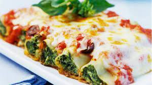

Canelones
Los canelones son una pasta ancha de forma rectangular que se emplea a menudo en la cocina italiana para hacer platos con carne picada, pescado, verdura, requesón o espinacas en su interior. Se suele enrollar formando un cilindro, y a veces aparece la denominación manicotti
Ingredientes
- 500 g. de carne picada
- 2 zanahorias
- 2 pimientos rojos
- 250 g. de tomate natural (1 vaso aproximadamente)
- 20 placas de panqueques
- 2 cebollas grandes
- Sal y pimienta negra recién molida
- Para finalizar y gratinar: 100-120 g. de queso rallado Grana Padano
- 1 cucharita colmada de orégano seco (o hierbas provenzales)
Pasos
- Para hacer canelones caseros comenzaremos con el relleno. Pochamos la cebolla y el pimiento verde a fuego lento.
- Una vez pochado agregamos la carne picada, salpimentamos
- Agregamos la salsa de tomate. Dejamos cocinar unos cuatro o cinco minutos, retiramos del fuego y reservamos.
- Por otra parte cocemos las láminas de pasta como indique el fabricante.
- Una vez que lo tengamos ya cocido la ponemos en un paño de algodón y procedemos a rellenarlos. Ponemos una pequeña cantidad de carne en la lámina de pasta y cerramos con mucho cuidado.
- Con el horno precalentado, colocamos en una fuente de horno todo los canelones formados y cubrimos con un poco de salsa condimentada y con queso rallado. Introducimos al horno a 200º durante unos 10 minutos y terminamos los últimos 3 minutos con el gratinador.